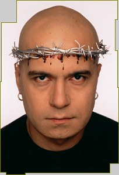

|
     |
|
Прекалено много неща са написани и
казани, с повод и без повод, за Слави
Трифонов. Нашите думи няма да имат за
цел да Ви преразказват и анализират
медийното или общественото отношение
към него, а по скоро да изразят личното
мнение на Team
MVM. Според нас, Слави е единственият истински шоумен в тази страна, наречена България. Няма да го определяме като единственият истински представител на шоубизнеса в страната, поради простата причина, че такъв все още не съществува или е в някаква ранна форма на развитие и не се знае рак ли е, риба ли е. Слави прави невъзможното вече години наред – той е силната екранна политическа опозиция, обществено актуалният водещ, заклетият привърженик на ЦСКА, и е неизменно популярното “лошо момче”. Във всяко едно свое амплоа, било то на телевизионен водещ, изпълнител, бизнесмен или просто жител на Балканите, той е винаги малко повече от това, което ни се иска да бъдем самите ние. Винаги една крачка пред всички останали и задължително в крак със световните тенденции на музикалните и медийни пазари. Това, което предлага Слави, е достатъчно и като качество и като количество. Напоследък е модерно да си против него, но този нашенски си феномен е лесен за обяснение. Ние си имаме грозния навик, когато нещо е наистина добро да се изказваме негативно, просто защото не можем да си признаем, че то наистина е добро. Ние от Team MVM не сме от тия. Слави е добър и спор по този въпрос няма. Да не казваме най-добрия...
Слави Трифонов е роден на 18 октомври 1966г. Израства в нормално работническо семейство, според тогавашните стандарти и има сестра. Още в основното училище се проявява като много общително и симпатично дете. По-късно, през юношеските си години, проявава музикални и артистични наклонности и започва да свири на виола. Завършва средното музикално училище в Плевен и като естествено продължение следва кандидатстване в Консерваторията. Бива приет и така се обучава там до момента, в който не успява да издържи изпита по камерна музика в последния семестър, и е принуден да приключи образованието си на крачка от така желаната в онези времена диплома за висше образование. За него също е известно, че в живота му има период, когато успява да познае мизерията и чара на гурбетчийството живеейки и свирейки в Италия. Като фактология Слави сигурно има период, когато Слави търси най-различни начини за проява - като напр. случката, която разказват група Сигнал в гостуването си в "Шоуто на Слави"; как Слави пожелал по време на едно тяхно клубно изпълнение в Студентски град преди години да изпее една песен. Песента се оказва "Камъните падат", но във вариант на английски език. Също така Слави сам е казвал за себе си (колко наистина, колко на шега), че е успял да стигне до дванадесета виола в оркестъра на Българското Народно Радио. Но истинският Слави за нас се появява със студентското предаване "Ку-Ку". По това време продукцията е първата външна такава в Българската Национална Телевизия и Трифонов попада там случайно. Бива препоръчан на екипа от тогавашната си приятелка и първата му медийна изява се състои от смела импровизация в сценка, в която е със тоалетно казанче на гърба. За периода на съществуването на предаването в първоначалния му състав, Слави има възможността да покаже и артистичните си наклонности, а също така и да наложи една нова за преването концепция. Известно време след напускането на Влади Въргала, излиза първият албум на "Ку-Ку" - "Ръгай чушки в боба". Слави събира и организира тогавашния бенд и доказва, че има възможности за развитие на екипа на предаването и в музикално направление. Своеобразната премиера на албума са първите награди на Ку-Ку академията, където комбинацията от скечове и музикални изпълнения се оказва взривоопасна и единствена по рода си в страната за онези години. Ку-Ку имат възможността да обиколят страната с едно своеобразно турне, наречено на първия им албум и да поставят основите за бъдещите по-мащабни такива. Cлави все по-смело настъпва на музикалния фронт - само след година излиза и вторият албум на Ку-Ку, "Шат на патката главата". В този си вариант на състав-изпълнители вече липсва Август Попов, но за сметка на това изпод куклата са излязли и са се присъединили Васил Василев-Зуека и Стефан Рядков. Слави изцяло поема отговорността за музикалното направление в дейността им и сам довежда цял симфоничен оркестър и организира вторите годишни награди на Ку-Ку академията (даже дирижира оркестъра, който свири на тях). В предаването се заражда идеята за Roma TV и следвашият им едноимен албум е с продуцент и главен художествен ръководител на оркестъра Слави Трифонов (също така и първа цигулка). Правят второто си национално турне през лятото на 1996 г. След известно време предаването "Ку-Ку" бива спряно, но за сметка на това се появява "Каналето". Там под запазената марка и мениджърството на "КаменВо" работят около година. После се зараждат и първите недоразумения между него и Слави Трифонов, и Любен Дилов-син. Създават от три равни дяла ТриВоДи, тримата са съдружници, а Слави е управител. Камен предостъпва марката Каналето за една година, а след раздялата им - си я получава обратно за да си прави вече своето Канале. За този творчески период на Слави излизат още два албума - "Жълта книжка" и "Хъшове"; Каналето успяват да "свалят" от власт Жан Виденов и са в основата на нежната революция от зимата на 1997. И за двата излезли албума е отбелязано, че аранжиментите са направени със специалната помощ на Слави. Също така, в едно паметно предаване от този период, Слави се разделя с неизменната си опашка в знак на протест срещу тогавашните управляващите. През пролетта на съшата година излизат още два нови албума - сборния "Каналето - The Best" и самостоятелния албум на Слави - "Едно Ферари с цвят червен". Лятото на 1997 се оказва съдбоносно за Каналето и тогавашния му състав - след грандиозното турне "Булгартабак Каналето" и няколко предавания в началото на новия сезон, Каналето се разпада като такова на "Каналето" по БНТ и предаването "Хъшове" без национален ефир и търсещо си подслон в някоя частна телевизия в страната. Като главна причина за разпаденото на екипа се смята недоразуменията между Слави и Камен, но каква е истината знаят само и единствено те. Медиите отлично поддържаха огъня между тях и за известно време това беше бум номер едно в страната. Слави остава само със Стефан Рядков от актьорите, но затова пък с Ку-Ку Бенд. Намери се пред проблеми като липса на национален ефир, недостатък на талантливи актьорски кадри, неудобно студио... Но въпреки всичко намери начин на оцелее. "Хъшове" се превърна в стабилна продукция, излъчвана в цялата страна и пряко в световната мрежа Интернет. Слави успя да се пребори с фалшивия актьорски ентусиазъм на няколко млади актьори, но пък в същото време предаването създаде звезди като Руслан Мъйнов, Любомир Нейков и Албена Михова. Централно място започна за заема Ку-Ку бенда и по-точно Евгени Димитров-Маестрото и Георги Милчев-Годжи, тогавашния водещ на "Часа на Бенда". Успяват да издадат още три албума - "Албум Девети-Трагичен", "Вавилон" и "Няма "не искам". Издател и на трите е БМК или Българска Музикална Компания, новото бизнес начинание на Слави, Маестрото и Годжи (60%, 10%, 10% и 20% за управителя на компанията Петко Гавазов). Но и тогава едно нещо не даваше мира на Слави - липсата на национален ефир. Множеството му опити да се пребори с БНТ, НСРТ и куп държавни инстанции бяха придружавани от различни акции организирани от екипа на предаването и горещо подкрепяни от широката аудитория. Всички знаеха, че Слави и екипът му заслужават това, за което се бореха. Само дето властите не им се искаше да е точно така и правеха всичко по силите си за да го възпрепядстват. Но както се казва - всяко зло за добро. С появата на новия Ефир 2 за българите - Национална Телевизия БиТиВи, паднаха и всички забрани и препядствия за Слави. В ефир се появява "Шоуто на Слави Трифонов", което се излъчва пет дни в седмицата от 22:30 часа. Момента с появата на новата телевизия е благодатен, с изключение на това, че все пак отказват на Слави някои неща, като напр. времето от 22:00 часа. Той поема отговорността за целия екип, а bTV предоставят техническото оборудване, студиото, декора. Телевизията осигурява рекламите, Слави получава определни средства, с които разполага както той прецени. Да, условията са тежки, но както и самия Слави казва: "По-добре всяка вечер по bTV, отколкото веднъж седмично по Седем дни". Рейтингът на шоуто е най-показателното доказателство за успеха му. Въпреки че е трудно да се определи с точност какъв е, по груби изчисления и някои маркетингови проучвания, това е най-високия рейтинг за телевизионно предаване в страната. Оставяме фактите да говорят сами за себе си. Осемте месеца съществуване на шоуто и над 140-те излъчени предавания са перфектното доказателство, че си заслужава да ги има и Дългия и предаването му. Или просто казано ... show must go on ... |
|
|